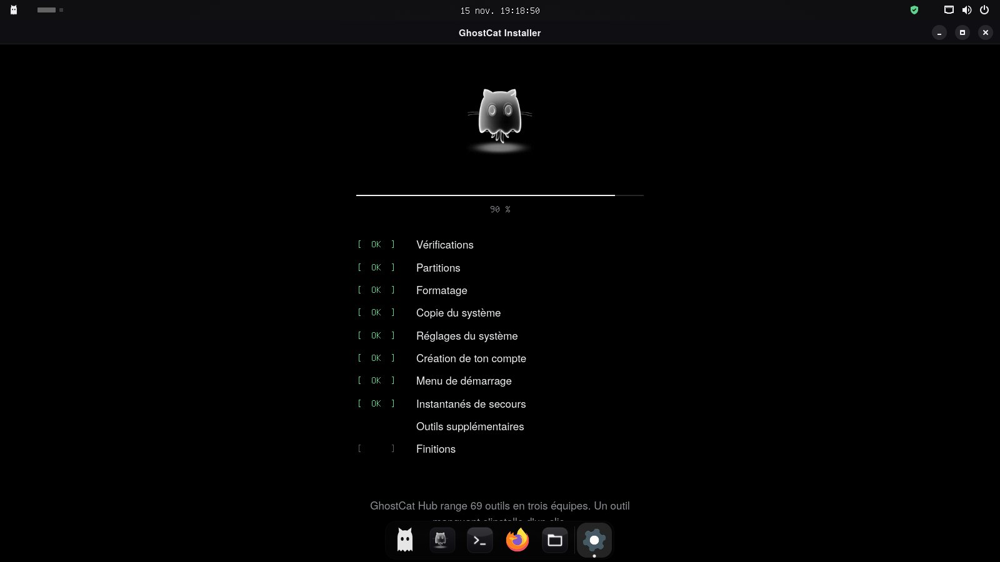
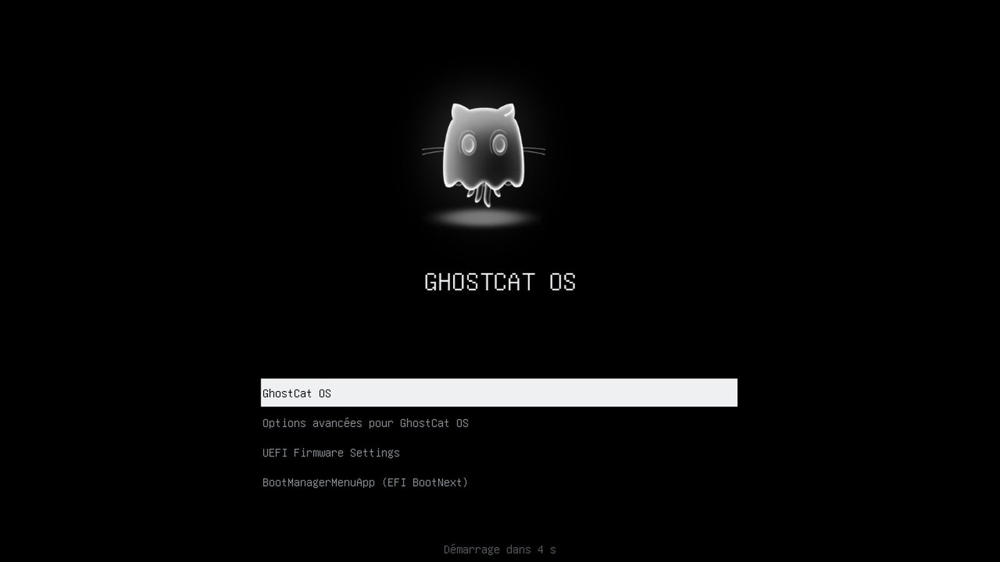
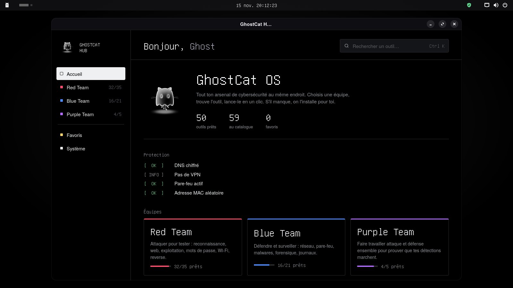
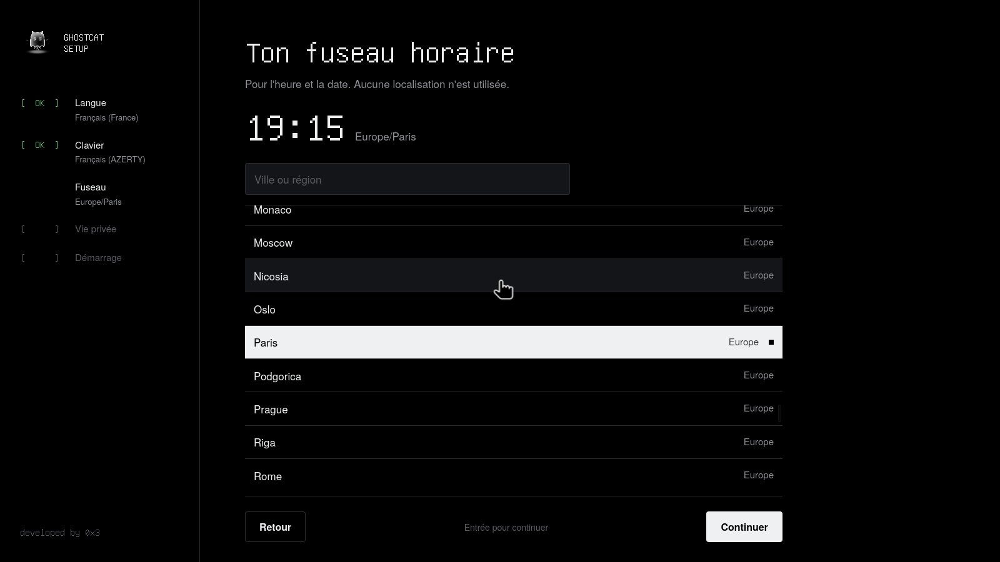

Une distribution Linux de cybersécurité basée sur Arch. Tes outils Red, Blue et Purple Team au même endroit, et ta vie privée réglée avant ton premier clic.
À coller dans PowerShell. La commande télécharge l'ISO, la vérifie et la range dans Téléchargements.Autres méthodes
Recherche de la dernière version…
Réglé avant ton premier clic
Au démarrage, GhostCat t'emmène dans un assistant : langue, clavier, fuseau horaire. Tout le reste est déjà protégé, et tu peux le changer quand tu veux.
[ OK ]
Adresse MAC aléatoire
Chaque réseau Wi-Fi voit un appareil différent. Impossible de te suivre d'un café à l'autre.
[ OK ]
DNS chiffré
Ton fournisseur d'accès ne voit plus les sites que tu demandes. Il se met en pause tout seul quand Mullvad ou un autre VPN est connecté.
[ OK ]
Pare-feu actif, SSH coupé
Aucune connexion entrante n'est acceptée sans que tu l'aies décidé.
[ OK ]
Appareil anonyme
Le nom de ton PC n'est jamais envoyé au routeur, et tes adresses IPv6 changent régulièrement.
Pas de localisation, pas d'historique des fichiers récents, la corbeille se vide après sept jours.
Une vraie distribution
GhostCat part d'Arch Linux, mais tout ce que tu vois vient de GhostCat : son dépôt de paquets, son installeur, son bureau et ses mises à jour.
Installeur GhostCat
Choisis le disque, coche le chiffrement si tu veux, crée ton compte. Le système est copié depuis la clé, sans rien télécharger, et un disque externe démarre aussi sur un autre PC.
Instantanés de secours
Avant chaque mise à jour, GhostCat garde une copie du système. Si quelque chose casse, choisis l'état d'avant dans le menu de démarrage.
Mises à jour sûres
ghostcat-update lit d'abord les annonces d'Arch Linux, met à jour les clés de signature, puis tout le reste.
Bureau GhostCat
Un menu fantôme, un bouclier qui montre ta protection, le bureau qui apparaît en fondu et le message de bienvenue au premier lancement.
Mode fantôme
Un bouton dans les réglages rapides : le bureau passe par Tor et ton Wi-Fi prend une nouvelle adresse MAC.
Dépôt GhostCat
Chaque morceau de GhostCat est un paquet publié sur ce site. Ils se mettent à jour avec le reste du système.

GhostCat Installer : chaque étape s'affiche comme au démarrage du système.

Le menu de démarrage GhostCat, avec les instantanés de secours.
Attaquer, défendre, prouver
69 outils rangés en trois équipes dans GhostCat Hub. Chacun se lance en un clic, et s'il n'est pas installé, le Hub l'installe pour toi.
Red Team
Tester un système en l'attaquant : reconnaissance, web, mots de passe, Wi-Fi, reverse engineering.
Nmapcartographie les ports et services
Burp Suiteintercepte le trafic web
Metasploitexploite les failles connues
Hashcatteste la solidité des mots de passe
Ghidradésassemble les programmes
Blue Team
Surveiller et défendre : trafic réseau, intrusions, malwares, enquête après incident.
Wiresharkanalyse le trafic paquet par paquet
Suricatadétecte les attaques sur le réseau
OpenSnitchdécide quelle appli sort sur Internet
YARAreconnaît les familles de malwares
Volatilityfouille la mémoire après un incident
Purple Team
Faire travailler les deux ensemble pour prouver que tes détections marchent vraiment.
Choisir une technique dans MITRE ATT&CK
La rejouer avec CALDERA ou Atomic Red Team
Vérifier que Suricata, Zeek ou Chainsaw l'ont vue
Écrire la règle Sigma ou YARA qui manquait

Le bureau GhostCat et le Hub : l'état de ta protection, puis tes outils par équipe, chacun lancé ou installé d'un clic.

GhostCat Setup, au premier démarrage, avant même le bureau.
Les outils offensifs ne s'utilisent que sur tes propres systèmes, ou avec une autorisation écrite.
Télécharger
Une seule commande : elle trouve la dernière version, télécharge les morceaux, les recolle et vérifie l'empreinte SHA256. Si la connexion coupe, relance-la, elle reprend où elle en était.
Fais un clic droit sur le bouton Démarrer, ouvre Terminal, puis colle :
Ouvre Rufus, choisis ta clé et l'ISO, mets le schéma de partition sur GPT, clique sur Démarrer et choisis « Écrire en mode Image DD ». Sous Linux : sudo dd if=ghostcat.iso of=/dev/sdX bs=4M status=progress.
Démarre dessus
Désactive le Secure Boot dans le BIOS, puis au démarrage ouvre le menu de boot avec F12, F8, F11 ou Échap selon ton PC, et choisis la clé.
Réponds à l'assistant
Langue, clavier, fuseau horaire, vie privée. Choisis Essayer pour découvrir GhostCat sans toucher à tes disques, ou Installer.
Installe sur un disque
GhostCat Installer s'ouvre : choisis le disque (il sera effacé), chiffre-le si tu veux, puis crée ton compte. Le système est copié depuis la clé, sans rien télécharger.
Laisse GhostCat finir
Compte cinq à quinze minutes. Avec l'édition lite et une connexion Internet, tu peux ajouter les outils lourds : ils se téléchargent pendant l'installation.
Redémarre sur ton disque
Retire la clé et choisis ton disque dans le menu de boot. Le menu GhostCat propose aussi les instantanés de secours, si une mise à jour se passe mal un jour.
Code source
GhostCat est libre, sous licence GPL-3.0. Tout le code est ici, sans compte à créer.
Non. Seul le disque que tu choisis dans l'installeur est effacé, et en mode live rien n'est écrit. Tu peux aussi installer GhostCat sur un disque externe et laisser ton PC tel quel.
Pourquoi désactiver le Secure Boot ?
GhostCat n'est pas signé par Microsoft. Avec le Secure Boot actif, le PC refuse de démarrer sur la clé.
J'ai déjà installé GhostCat, comment passer à la nouvelle version ?
Une seule commande ajoute le dépôt GhostCat et installe la nouvelle interface. Tes fichiers ne bougent pas :
Dans le menu fantôme ou dans le Hub, choisis Mettre à jour le système, ou tape ghostcat-update. Un instantané est pris avant chaque mise à jour : en cas de souci, choisis-le dans le menu de démarrage.
Pourquoi l'ISO est en plusieurs morceaux ?
GitHub limite chaque fichier à 2 Go. Les commandes de téléchargement recollent et vérifient tout pour toi.
C'est légal ?
GhostCat est libre et gratuit, et posséder ces outils est légal. Les utiliser contre un système qui n'est pas le tien, sans autorisation écrite, ne l'est pas.